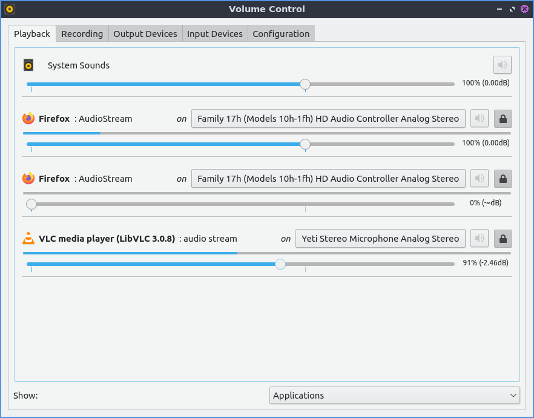
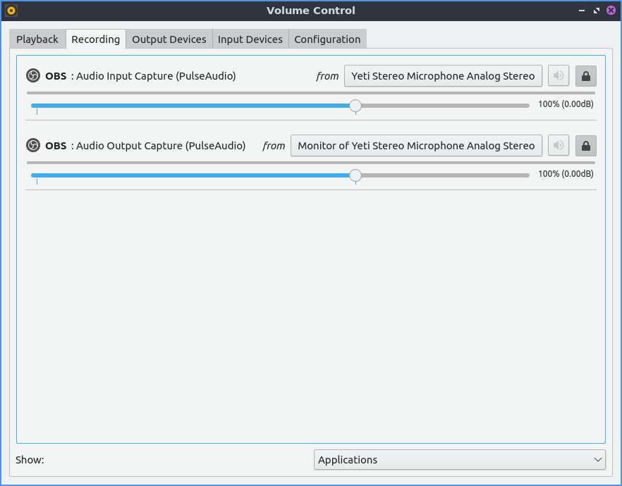
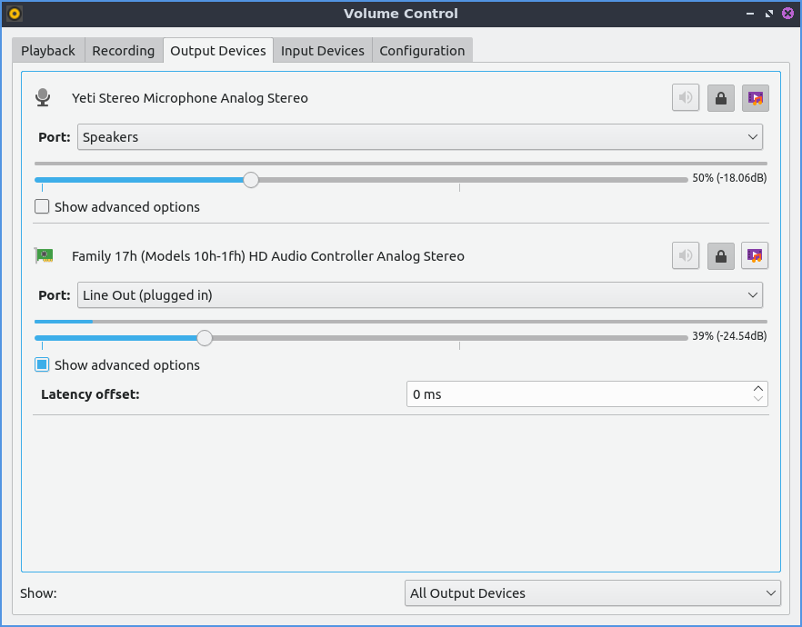
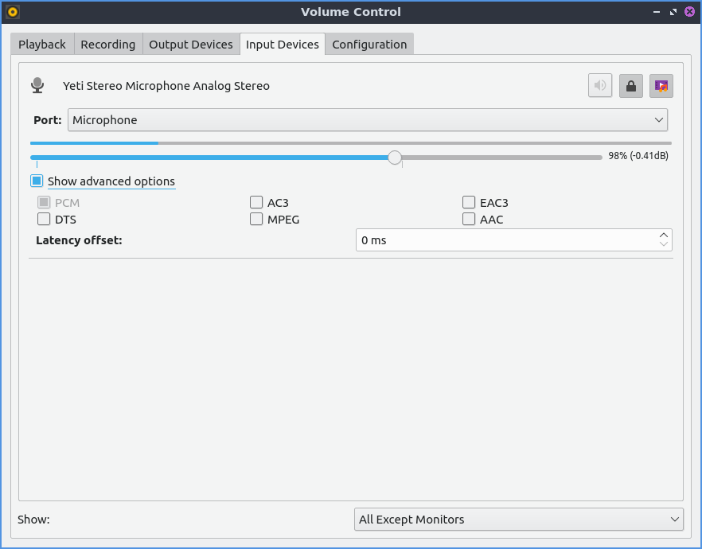
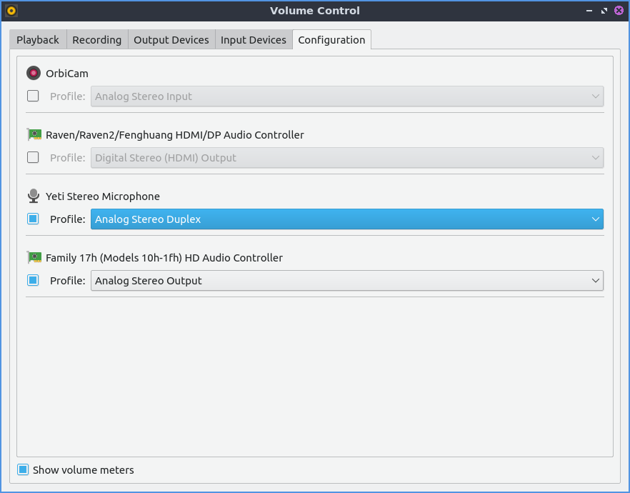

Chapter 2.5.1 PulseAudio Volume Control¶
PulseAudio Volume Control is the default volume mixer for Denios-OS. It also manages multiple input and output devices for all programs on your system.
Usage¶
The Playback tab of PulseAudio Volume Control gives you the ability to the control the output device, mute, or change the volume of each application. To change the Volume of each application on the playback slide the slider to the right for more volume or to the left for less volume. Above your volume slider the is a bar that shows how much volume is currently emitted by that particular application. The button with an X over the speaker is a mute button and if it is a darker gray that application is currently muted and can’t make any sound. The drop down Show drop down menu lets you see your virtual streams and applications. In the bottom right hand corner is the current volume level viewed as a percentage. This program also in software allows you to go over 100 percent volume if it is too quiet. If you have multiple sound outputs enabled you can change what output of an application by using the on menu.
To view settings for applications recording audio use the Recording tab. If you have no applications recording the tab will say No application is currently recording audio. To mute your recording press the button that looks like a speaker with an x over it. To increase the volume of recording move the slider to the right. To decrease the volume of recording move the slider to the left. To change what source an application is recording use the drop down with the word From to the left. To adjust the difference of each left and right press the lock button or press it again to go back to one slider. To change the left audio channel change the use the Front Left slider. To change the right channel or audio use the Front Right slider.
The Output devices tab shows different output for different sounds. To mute one output such as a set of speakers press the button that looks like a speaker with an X on it. To increase the volume of an output slide the slider for that output to the right. To decrease the volume for each output slide the slider to the left. To see the sound output of each output device see the bar over the volume slider. To view more advanced options check the Show advanced options will show advanced options. The advanced option for Latency offset will be shown for for how long to shift offset for latency for say a badly synced video. To the right of the mute button there is a lock button where you can change the balance between the left and right speakers by sliding the sliders just like for volume. For stereo setup with a subwoofer for example will have channels Front Left, Front Right, and Subwoofer each having there own channels to adjust volume. To change back to a single slider for each channel press the lock button. To select another source to output audio use the Port drop down menu.
The Input devices tab manager your sound inputs. To mute your microphone in pulseaudio toggle the button that looks like a speaker. To adjust input volume slide the slider to the right to increase volume or to the left to decrease volume. To select which audio input such as line in or microphone for your device is in the Port drop down but this menu is hidden if you do not have inputs. Right below Port will show how much volume is being picked up by the input device. To change left and right channels separately press the lock button. To change your volume on each channel drag to the left for more volume or to the right for less volume. To get back to one volume slider press the lock button again. To mute your input press the button to the left on the right hand side. To toggle seeing more options press the Show advanced options checkbox. With this shown the Latency offset field will allow you to change the latency offset.
The Configuration tab has different sound profiles for each different output device. To change how sound comes out of your speakers or headphones varying for example the number of speakers for each device change the Profile drop down menu. Choosing for example an will let you not just change stereo but also control the volume of the subwoofer. To enable or disable an audio output press the checkbox to the left of Profile. To toggle PulseAudio volume control showing a how much sound a speaker, headphone or microphone is making check/uncheck the Show volume meters checkbox.
Version¶
Denios-OS ships with version 1.1.0 PulseAudio Volume Control.
How to Launch¶
To launch PulseAudio Volume Control from the menu or run
pavucontrol-qt
from the command line. Another way to launch PulseAudio Volume Control is to left click on the volume applet in the panel and click the Mixer button. The icon for PulseAudio Volume Control looks like a black and yellow speaker.